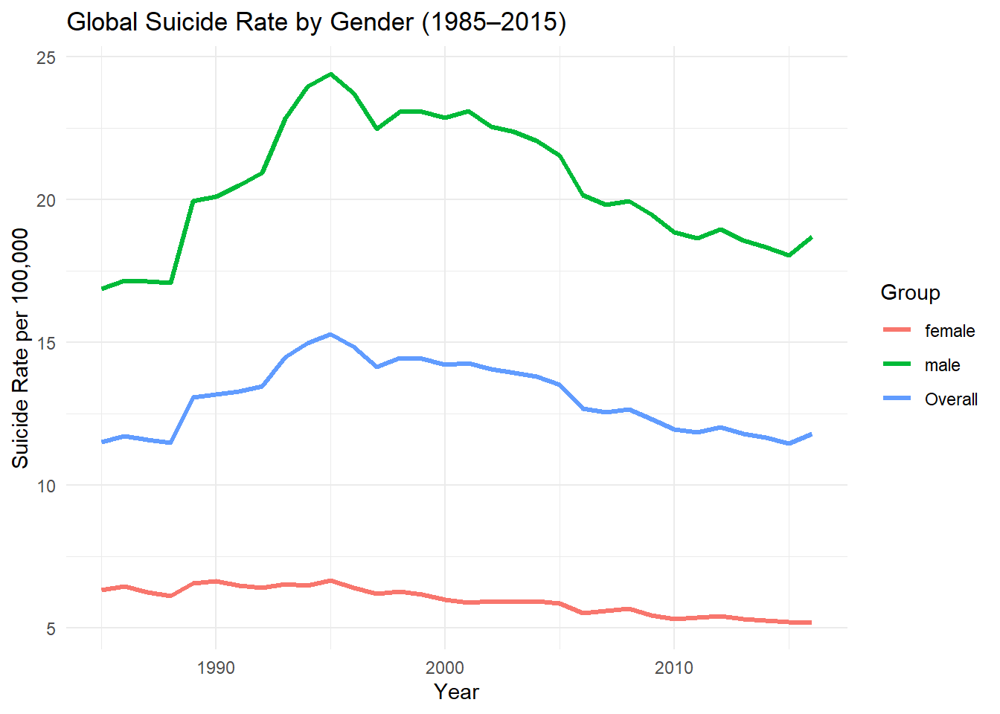
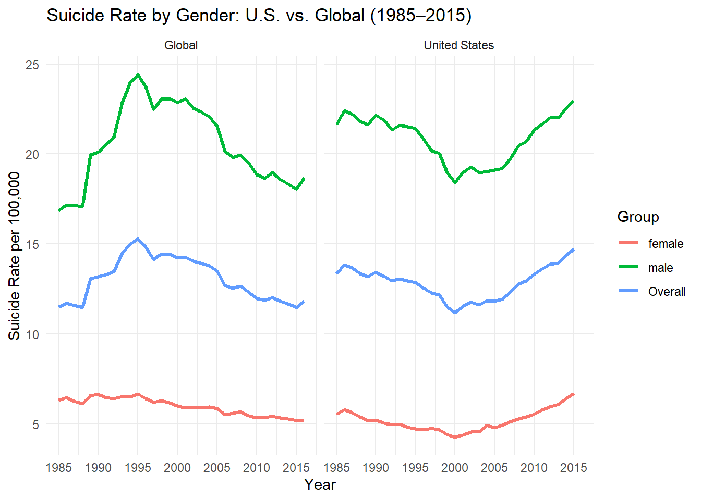
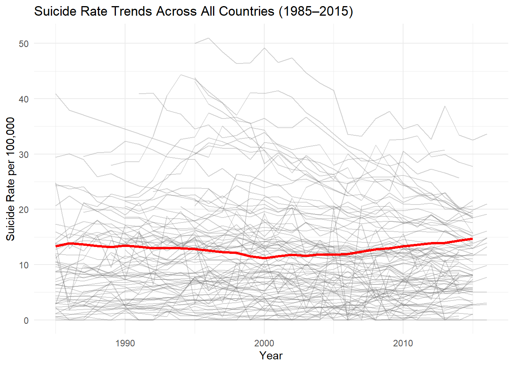
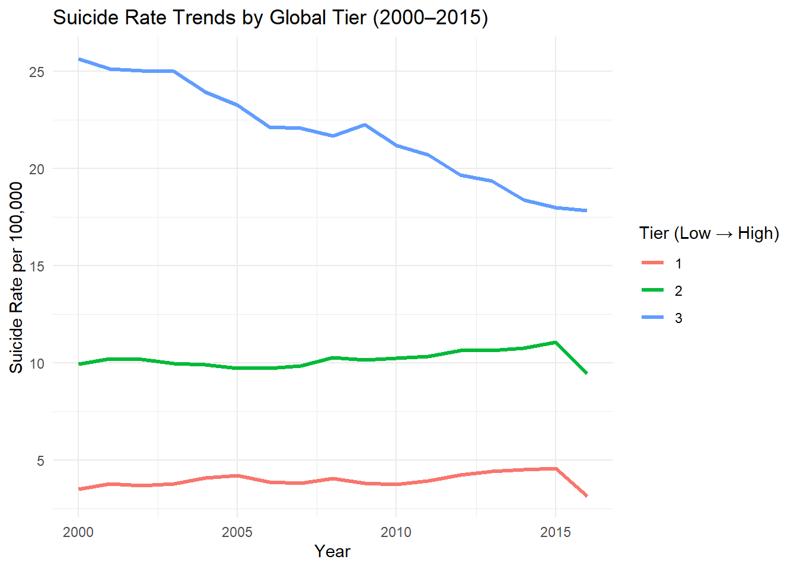
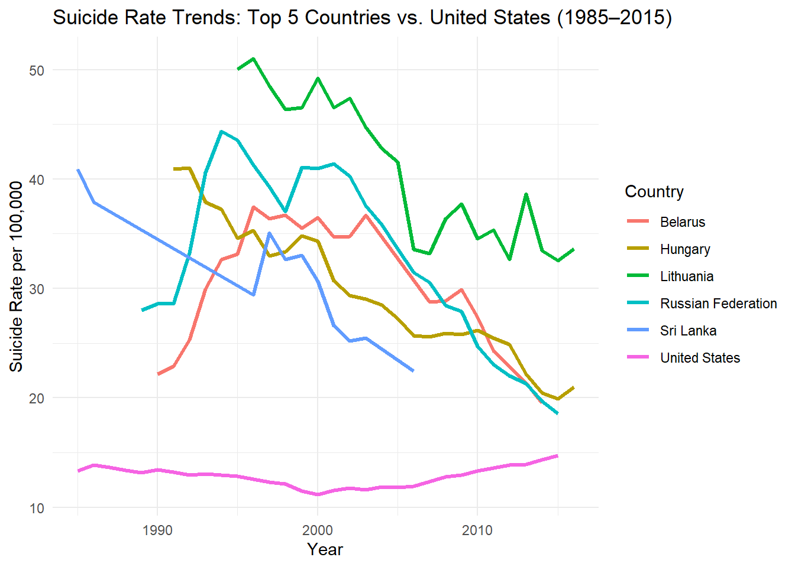
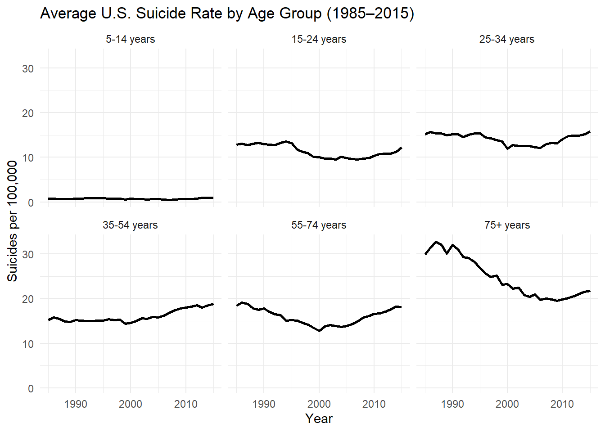
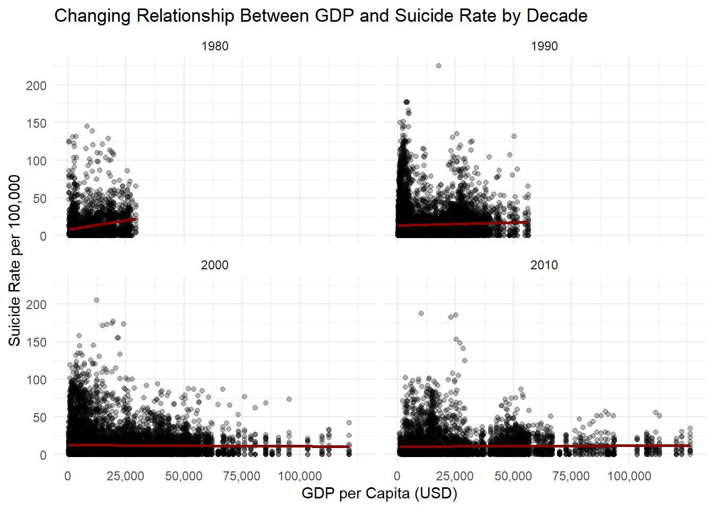
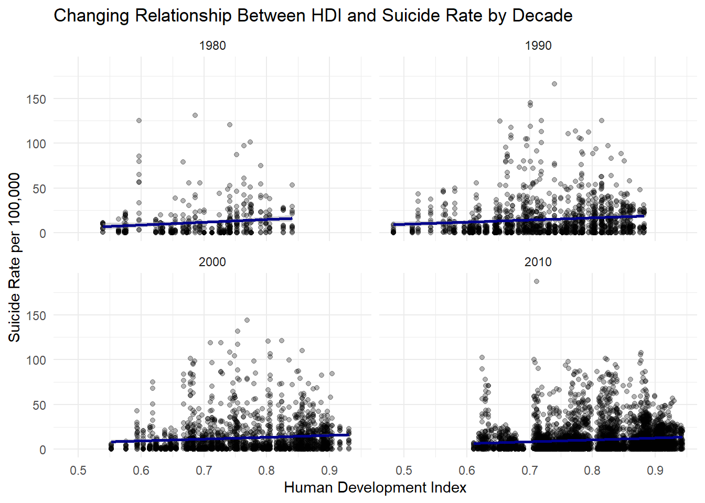

── Attaching core tidyverse packages ──────────────────────── tidyverse 2.0.0 ──
✔ dplyr 1.1.4 ✔ readr 2.1.5
✔ forcats 1.0.0 ✔ stringr 1.5.1
✔ ggplot2 4.0.0 ✔ tibble 3.3.0
✔ lubridate 1.9.4 ✔ tidyr 1.3.1
✔ purrr 1.1.0
── Conflicts ────────────────────────────────────────── tidyverse_conflicts() ──
✖ dplyr::filter() masks stats::filter()
✖ dplyr::lag() masks stats::lag()
ℹ Use the conflicted package (<http://conflicted.r-lib.org/>) to force all conflicts to become errors
Load data, check column names
suicide_data <-read_csv("master.csv")
Rows: 27820 Columns: 12
── Column specification ────────────────────────────────────────────────────────
Delimiter: ","
chr (5): country, sex, age, country-year, generation
dbl (6): year, suicides_no, population, suicides/100k pop, HDI for year, gdp...
num (1): gdp_for_year ($)
ℹ Use `spec()` to retrieve the full column specification for this data.
ℹ Specify the column types or set `show_col_types = FALSE` to quiet this message.
# Add a label for overall to match us_by_genderus_overall <- us_overall |>mutate(sex ="Overall")# Rename for consistencyus_by_gender <- us_by_gender |>rename(us_rate = rate)# Combine into one dataframeus_plot_data <-bind_rows(us_overall, us_by_gender)
Plot Graph US data
library(ggplot2)ggplot(us_plot_data, aes(x = year, y = us_rate, color = sex)) +geom_line(linewidth =1.2) +labs(title ="U.S. Suicide Rate by Gender (1985–2015)",x ="Year",y ="Suicide Rate per 100,000",color ="Group" ) +theme_minimal()
library(ggplot2)ggplot(global_plot_data, aes(x = year, y = suicide_rate, color = sex)) +geom_line(linewidth =1.2) +labs(title ="Global Suicide Rate by Gender (1985–2015)",x ="Year",y ="Suicide Rate per 100,000",color ="Group" ) +theme_minimal()

Combine global and US data set
# Add a region label to each datasetus_plot_data <- us_plot_data |>rename (suicide_rate = us_rate)|>mutate(region ="United States")global_plot_data <- global_plot_data |>mutate(region ="Global")# Combine into one datasetcombined_data <-bind_rows(us_plot_data, global_plot_data)
Facet by Region:
library(ggplot2)ggplot(combined_data, aes(x = year, y = suicide_rate, color = sex)) +geom_line(linewidth =1.2) +facet_wrap(~ region) +scale_x_continuous(breaks =seq(1985, 2015, by =5)) +labs(title ="Suicide Rate by Gender: U.S. vs. Global (1985–2015)",x ="Year",y ="Suicide Rate per 100,000",color ="Group" ) +theme_minimal()

Key Takeaways:
U.S. Male rates have risen sharply post-2000
In contrast, the global male rate, which peaked in the mid-90s has since declined
U.S. Male rates show a sustained increase from ~2000 onward, ending higher than in the mid 80s
Female suicides rates are lower and more stable
Both globally and in the U.S., female suicide rates are much lower than male rates
Global female rates show a slight decline over time
U.S. female rates, however, show a slow but steady increase post-2000
Overall U.S. Suicide rate has risen since ~2000
Driven mainly by rising male (and to a lesser degree, female) rates
This contrasts with the declining global overall rate, suggesting the U.S. is diverging from global trends
In conclusion,
The global suicide rates have improved modestly since the 1990s, especially for men
But the U.S. appears to be an exception, with rates rising for both genders, particularly men
This may potentially suggest a need to explore U.S. specific drivers of suicide risk (e..,g mental health care access, economic pressure, opioid epidemic, firearm access)
Graphs 2: Comparing US trends to other High-Rate countries
Identify high risk countries by calculating average suicide rate by country over time (overall)
all_trends <- suicide_data |>group_by(country, year) |>summarize(suicide_rate =sum(suicides_no, na.rm =TRUE) /sum(population, na.rm =TRUE) *100000,.groups ="drop" )ggplot(all_trends, aes(x = year, y = suicide_rate, group = country)) +geom_line(alpha =0.3, color ="gray40") +geom_line(data =filter(all_trends, country =="United States"),aes(x = year, y = suicide_rate),color ="red",size =1.2 ) +labs(title ="Suicide Rate Trends Across All Countries (1985–2015)",x ="Year",y ="Suicide Rate per 100,000" ) +theme_minimal()
Warning: Using `size` aesthetic for lines was deprecated in ggplot2 3.4.0.
ℹ Please use `linewidth` instead.

Is it a U.S. phenomenon that lower rate countries are catching higher rate countries or is it a global trend?
# Get each country's overall average rateavg_rates <- suicide_data |>group_by(country) |>summarize(avg_rate =sum(suicides_no, na.rm =TRUE) /sum(population, na.rm =TRUE) *100000 )# Bin into 3 tiers (e.g., terciles)avg_rates <- avg_rates |>mutate(tier =ntile(avg_rate, 3) # 1 = low, 3 = high )# Merge tier info back to suicide datatiered_data <- suicide_data |>left_join(avg_rates, by ="country") |>filter(year >=2000) |>group_by(year, tier) |>summarize(rate =sum(suicides_no) /sum(population) *100000,.groups ="drop" )# Plot over timeggplot(tiered_data, aes(x = year, y = rate, color =factor(tier))) +geom_line(linewidth =1.2) +labs(title ="Suicide Rate Trends by Global Tier (2000–2015)",x ="Year",y ="Suicide Rate per 100,000",color ="Tier (Low → High)" ) +theme_minimal()

It does not seem to be a global trend, so we can focus on the US.
Calculate suicide rate by years for top 5 countries + the US
# Define top 5 countries + USselected_countries <-c("Lithuania", "Russian Federation", "Sri Lanka", "Belarus", "Hungary", "United States")# Calculate suicide rate by year for these countriestop_trends <- suicide_data |>filter(country %in% selected_countries) |>group_by(country, year) |>summarize(suicide_rate =sum(suicides_no) /sum(population) *100000,.groups ="drop" )
Plot graph 2
ggplot(top_trends, aes(x = year, y = suicide_rate, color = country)) +geom_line(linewidth =1.2) +labs(title ="Suicide Rate Trends: Top 5 Countries vs. United States (1985–2015)",x ="Year",y ="Suicide Rate per 100,000",color ="Country" ) +theme_minimal()

Key Takeaways:
While the top 5 countries had much higher suicide rates in the 1980s - 1990s, many of these countries have experienced a sharp and consistent decline over time.
The United States, while starting at a much lower rate, is one of the only countries on this chart with a rising trends from ~2000 onward. This makes the U.S. an outlier not in level, but in trajectory, which is possibly more concerning.
Graph 3: Looking at time trends by age (US)
Create mean rates per year per age group to “smooth” out the noise of the graphs. Re-factor to organize the graph by age, plot as a line graph.
# Filter for United States onlyus_age_trends <- suicide_data |>filter(country =="United States") |>group_by(year, age) |>summarize(mean_rate =mean(`suicides/100k pop`, na.rm =TRUE),.groups ="drop" ) |>mutate(age =factor(age, levels =c("5-14 years","15-24 years","25-34 years","35-54 years","55-74 years","75+ years" )))# Plotggplot(us_age_trends, aes(x = year, y = mean_rate)) +geom_line(size =1) +facet_wrap(~ age) +labs(title ="Average U.S. Suicide Rate by Age Group (1985–2015)",x ="Year",y ="Suicides per 100,000" ) +theme_minimal()

Key Takeaways
25-34, 35-54, and 55-74 year olds all show upward trends since the early 2000s, after relatively flat or declining rates in the 1990s. This trend may be especially alarming since these age groups are the core of the adult population.
15-24 year olds had a decline around the early 2000s, but have been rising again in the last decade. This could reflect a worsening around youth mental health or an increase in social stressors in recent years, but this is only a speculative explaination.
The 75+ age group shows a clear decline from 1985 to around 2005, follow by a plateau or mild upward drift. Still, the 75+ suicide rate remains the one of the lowest.
the 5-14 year old group remains low and relatively flat. A reassuring trend, though even small increases in this age group are a cause for concern.
Graph 4: GDP and Suicide Rate
The first potentially explanatory variable in this dataset is GDP, which stands for gross domestic product. This is the total market value of all finished goods and services produced within a country’s borders during a specific period. This is considered a key indicator of a nation’s economic health and is used by policy makers to measure economic size and growth.
First, to test the association between GDP And suicide rate, I’ll run a regression with time as a covariate.
# Regression with interaction between GDP and yeargdp_interact_model <-lm(`suicides/100k pop`~`gdp_per_capita ($)`* year, data = suicide_data)# View the model outputsummary(gdp_interact_model)
Call:
lm(formula = `suicides/100k pop` ~ `gdp_per_capita ($)` * year,
data = suicide_data)
Residuals:
Min 1Q Median 3Q Max
-18.635 -11.484 -6.792 3.742 210.749
Coefficients:
Estimate Std. Error t value Pr(>|t|)
(Intercept) 5.029e-04 3.675e+01 0.000 1.00
`gdp_per_capita ($)` 1.658e-02 1.807e-03 9.177 <2e-16 ***
year 6.098e-03 1.837e-02 0.332 0.74
`gdp_per_capita ($)`:year -8.253e-06 9.003e-07 -9.168 <2e-16 ***
---
Signif. codes: 0 '***' 0.001 '**' 0.01 '*' 0.05 '.' 0.1 ' ' 1
Residual standard error: 18.92 on 27816 degrees of freedom
Multiple R-squared: 0.004786, Adjusted R-squared: 0.004679
F-statistic: 44.59 on 3 and 27816 DF, p-value: < 2.2e-16
Key takeaways:
A multiple linear regression tested whether GDP per capita and year predicted suicide rates (per 100,000 people), including their interaction. The model was significant, F(3, 27816) = 44.59, p < .001, with a small effect size (R² = .0048).
GPD per capita was a significant positive predictor (β = 0.0166, p < .001), but,
Year alone was not (β = 0.0061, p = .74)
The interaction between GDP and Year was significant and negative (β = −0.00000825, p < .001), indicating that the relationship between GDP And suicide rate weakened over time.
The weakening of the interaction between GDP and year could reflect global development, better access to healthcare, or more nuanced relationships between the a country’s economic development and suicide rates.
The very low model fit suggests that GDP and Year don’t explain most of the variation in suicide rates, which is expected given the complexity of suicide.
Now, let’s add a visual
# Create decade variablesuicide_data <- suicide_data |>mutate(decade =floor(year /10) *10)# Plot: GDP vs. suicide rate by decadelibrary(scales)
Attaching package: 'scales'
The following object is masked from 'package:purrr':
discard
The following object is masked from 'package:readr':
col_factor
ggplot(suicide_data, aes(x =`gdp_per_capita ($)`, y =`suicides/100k pop`)) +geom_point(alpha =0.3) +geom_smooth(method ="lm", se =TRUE, color ="darkred", size =1) +facet_wrap(~ decade) +scale_x_continuous(labels =label_comma(), breaks =c(0, 25000, 50000, 75000, 100000)) +labs(title ="Changing Relationship Between GDP and Suicide Rate by Decade",x ="GDP per Capita (USD)",y ="Suicide Rate per 100,000" ) +theme_minimal()
`geom_smooth()` using formula = 'y ~ x'

Graph 5: Human Development Index (HDI) and Suicide Rate
Next, let’s look at a more robust measure of human development. The human development index (HDI), is a composite statistic that measure a country’s average achievement in life expectancy, education, and a decent standard of living. While GDP focuses purely on economic activity, the HDI provides a broader picture of a nation’s development.
Note: Unfortunately, I have a lot of missing HDI data
# Filter out missing HDI valueshdi_data <- suicide_data |>filter(!is.na(`HDI for year`))# Run the regression with year as a covariate and examining HDI*Year interactionhdi_model_interaction <-lm(`suicides/100k pop`~`HDI for year`* year, data = hdi_data)# View the resultssummary(hdi_model_interaction)
Call:
lm(formula = `suicides/100k pop` ~ `HDI for year` * year, data = hdi_data)
Residuals:
Min 1Q Median 3Q Max
-18.983 -9.925 -6.055 3.513 177.813
Coefficients:
Estimate Std. Error t value Pr(>|t|)
(Intercept) -307.4099 357.0744 -0.861 0.3893
`HDI for year` 1068.7616 474.9516 2.250 0.0245 *
year 0.1509 0.1782 0.847 0.3971
`HDI for year`:year -0.5220 0.2369 -2.204 0.0276 *
---
Signif. codes: 0 '***' 0.001 '**' 0.01 '*' 0.05 '.' 0.1 ' ' 1
Residual standard error: 17.2 on 8360 degrees of freedom
Multiple R-squared: 0.01874, Adjusted R-squared: 0.01839
F-statistic: 53.23 on 3 and 8360 DF, p-value: < 2.2e-16
Key Takeways
A linear regression was conducted to examine the association between Human Development Index (HDI), year, and their interaction on suicide rates. The overall model was significant, F(3, 8360) = 53.23, p < .001, with an adjusted R² = .018.
HDI was positively associated with suicide rates (β = 1068.76, p = .025), and the interaction between HDI and year was significant and negative (β = -0.522, p = .028), indicating that the association between HDI and suicide rates has weakened over time.
In comparison to the GDP regression, HDI appears to be a stronger predictor of suicide rates than GDP, both in terms of coefficient size (β ≈ 1068.76 vs β ≈ 0.01658) and explained variance (R² = 0.018 vs R² = 0.0047).
Like GDP, the interaction terms in both models imply that development is less predictive of suicide now than in the past, possibly due to rising suicide rates in lower-development countries or stabilizing rates in high-development countries.
Overall, Although HDI showed a statistically significant relationship with suicide rates, the model’s low R² (1.8%) indicates that HDI is not a strong predictor of suicide risk on its own. This suggests that suicide rates are influenced by a broader set of factors beyond national-level human development indicators. However, this data set had a lot of missing HDI data, which could effect the analysis.
Let’s graph this.
# Filter rows with non-missing HDIhdi_data <- suicide_data |>filter(!is.na(`HDI for year`)) |>mutate(decade =floor(year /10) *10)# Plot: HDI vs. suicide rate by decadeggplot(hdi_data, aes(x =`HDI for year`, y =`suicides/100k pop`)) +geom_point(alpha =0.3) +geom_smooth(method ="lm", se =TRUE, color ="darkblue", size =1) +facet_wrap(~ decade) +scale_x_continuous(labels =label_number(accuracy =0.1)) +labs(title ="Changing Relationship Between HDI and Suicide Rate by Decade",x ="Human Development Index",y ="Suicide Rate per 100,000" ) +theme_minimal()
`geom_smooth()` using formula = 'y ~ x'

Final Takeway:
Despite examining economic and development indicators like GDP and HDI, neither emerges as a strong predictor of suicide rates globally. The variability across age, gender, and national trends suggests that suicide is not rooted in any single societal metric, but instead reflects the outcome of a constellation of psychological, social, and structural factors.
This reinforces the need for multi-level, interdisciplinary approaches, not only data-driven but also human-centered, to understand and prevent suicide.